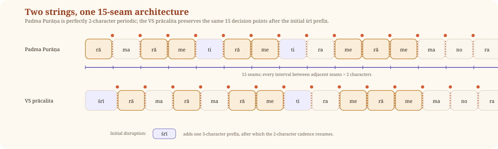
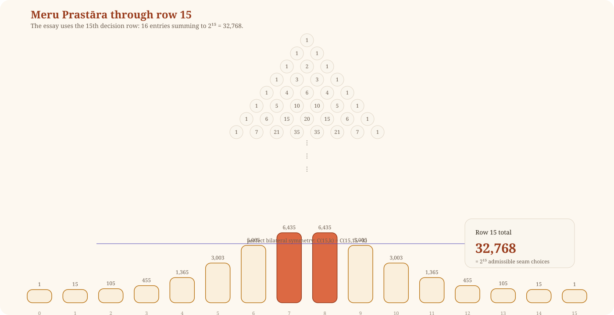
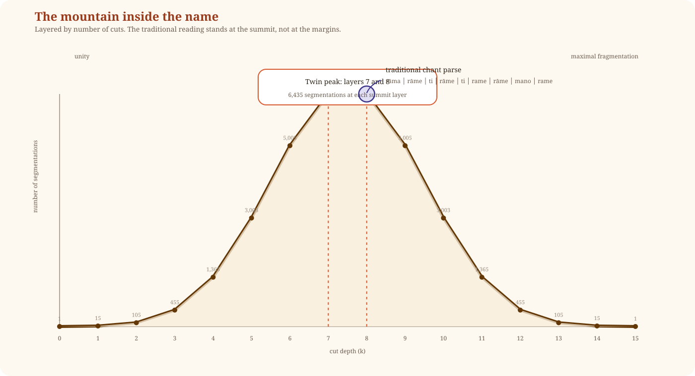
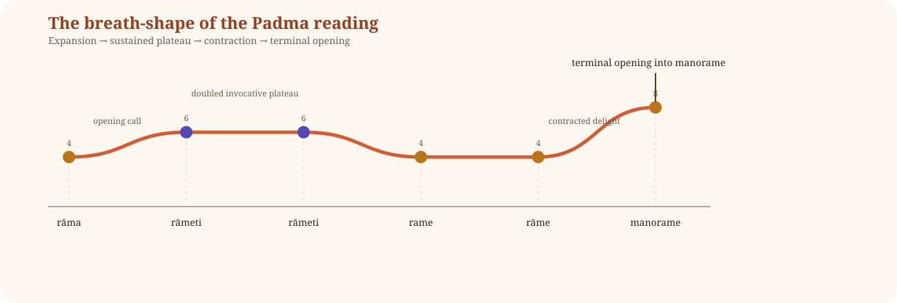
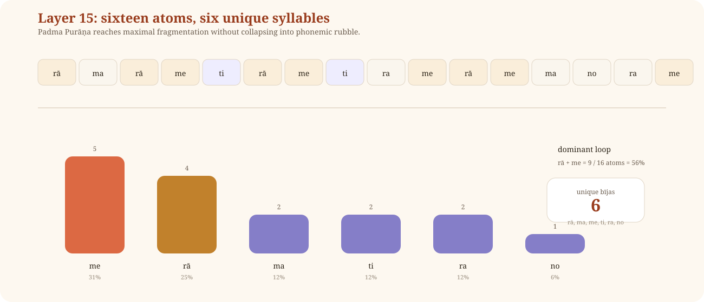

What Hides Inside the Name We Chant
ॐ
Among the avatāras of Viṣṇu, Śrī Rāma stands in a distinct radiance. Kṛṣṇa dazzles, Narasiṃha erupts, Vāmana astonishes, but Rāma is remembered in another way: as maryādā puruṣottama, the fullness of divine order embodied in human form. In him, dharma does not descend as spectacle alone. It walks, speaks, suffers, chooses, restrains itself, and remains luminous without ceasing to be tender. That is why the name “Rāma” is not merely the name of a king in an epic, nor merely the name of one avatāra among others. For countless Hindus it is the felt presence of divinity itself made utterable. The name does not merely point toward the Lord from afar. The name is already warm with him.
It is therefore no small thing that Lord Śiva himself should speak of this name with such intimacy. The tradition has preserved a verse for centuries, and not as an abstract statement, but as something lived in homes, temples, journeys, grief, and relief. The verse exists in more than one form. It has traveled through time the way sacred texts do: faithfully but not identically. Before we can look inside it, we must first see it clearly.
The Two Verses
The Padma Purāṇa Original
The oldest attested form appears in the Uttarakhaṇḍa of the Padma Purāṇa (71.331), in the dialogue between Umāpati and Nārada, where Śiva speaks to Nārada:
रामरामेति रामेति रमे रामे मनोरमे । सहस्रनामतत्तुल्यं रामनाम वरानने ॥
rāmarāmeti rāmeti rame rāme manorame sahasranāmatattulyaṃ rāmanāma varānane
No śrī prefix. The name appears twice, each time followed by iti: “Rāma, thus. Rāma, thus.” Two discrete acts of naming. Two moments of recognition. The structure is that of quotation: the speaker reports what the devotee says, and the devotee says the name twice, each utterance complete in itself.
The VS Prācalita
The form most widely known today appears in the phala-śruti (the section declaring the fruit or merit of recitation) of the Viṣṇu Sahasranāma prācalita pāṭha (the prevalent received text), where the dialogue is reframed as Pārvatī asking and Śiva answering:
श्रीरामरामरामेति रमे रामे मनोरमे । सहस्रनामतत्तुल्यं रामनाम वरानने ॥
śrīrāmarāmarāmeti rame rāme manorame sahasranāmatattulyaṃ rāmanāma varānane
Three changes from the Padma Purāṇa. First, śrī is added at the beginning, a Vaiṣṇava devotional prefix. Second, the doubled quotation “rāmeti rāmeti” (Rāma-thus, Rāma-thus) becomes “rāma rāma rāmeti” (Rāma, Rāma, Rāma-thus), converting two discrete acts of naming into a triple invocation with a single iti. Third, the addressee shifts from Nārada to Pārvatī. The prācalita’s own manuscript tradition records the Padma version as a variant reading, which is itself evidence that the editors knew the older form.
The verse does not appear anywhere in the BORI Critical Edition of the Mahābhārata. The BORI editors excised the entire Pārvatī-Śiva dialogue from the VS phala-śruti. This is not evidence that the verse is inauthentic. It is evidence that the verse entered the Mahābhārata text through a specific transmission pathway, and that the Padma Purāṇa is its original home.
What Śiva Is Saying
Before analysis, devotion. The verse should be heard first as what it is: a statement by Śiva about the power of a name.
The first line is the mantra itself: “Rāma, Rāma, saying ‘Rāma, Rāma,’ I delight in Rāma, O delighter of the mind.” The second line is the claim: “The name of Rāma, O beautiful-faced one, is equal to the thousand names.”
That is what the verse says on its face. A devotee who chants rāma rāma and finds joy in Rāma (rame rāme) receives the same fruit as reciting the entire Viṣṇu Sahasranāma, all one thousand names, all 8,663 syllables. One verse. Two lines. Set against the full weight of the Sahasranāma and found equal.
Devotees have chanted this verse for centuries without needing anything more than Śiva’s word. Mothers have taught it to children. The dying have rested in it. The claim sahasranāma tattulyam (“equal to the thousand names”) is a compression so vast it invites a question that devotion itself asks: how? What is inside the name that could carry what Śiva says it carries?
The analysis that follows is one attempt to answer that question. It is not a replacement for chanting. It is a way of looking at what the chanting holds.
What Both Share
The second half of the first line is identical across all sources: rame rāme manorame. This is stable. And the distinction within it is one of the most precise feats of craftsmanship in the verse.
Rame (रमे, with a short a) is the first person singular of the root √ram, “to delight.” It means: “I delight,” “I rejoice,” “I find joy.” This is the devotee’s own voice.
Rāme (रामे, with a long ā) is the locative case of the noun Rāma. It means: “in Rāma.” This is the name of the Lord, in the grammatical form that means in him.
The difference between the two words is a single vowel-length. In sound they are nearly identical. In meaning, the distance is immense. One is the act of delight. The other is the place where delight rests. The devotee and the deity are separated by nothing more than the duration of a vowel.
To feel the force of this, imagine trying to write an English line where “I rest” and “in Rest” sounded nearly the same without becoming clumsy. It would be difficult even to attempt. Here Sanskrit does it with ease, and the line remains musical rather than mechanical.
The verse says: “I delight in Rāma, O delighter of the mind.” The devotee’s interior movement and the Lord’s name stand almost on top of one another in sound, but not in meaning. This is not a scribal variation. It is a devotional architecture: the one who delights and the one in whom delight is found, side by side, in the same breath.
What This Essay Analyzes
Both versions deserve analysis, and both will receive it. But the Padma Purāṇa version occupies a special position for two reasons. First, it is textually prior: shorter (in textual criticism, the shorter reading is usually the older one), structurally more archaic (quotation rather than invocation), and independently attested as a variant in the prācalita’s own tradition. Second, as the analysis will show, it possesses a mathematical property that the VS prācalita does not: perfect uniform spacing between every adjacent split-point, with no exceptions. It is, in a precise combinatorial sense, the more perfect string.
The VS prācalita version is analyzed alongside it. Where the two versions diverge, the divergence is noted. Where they converge, the convergence is itself a finding.
The claim in both versions is the same. It is simple and immense: the name of Rāma is equal to the thousand names.
For most devotees, that is enough. Śiva has spoken; devotion rests there. But devotion also has its own hunger. Love does not merely repeat. Love also looks, listens, turns the jewel in the light, and asks with wonder: what did Śiva see here? What lies hidden in these syllables that allows the tradition to say, without hesitation, that the name of Rāma stands equal to the Sahasranāma?
What follows is an offering of attention. The tools are drawn from within the Sanskritic world itself: counting, grammar, phonetics, nirukta (the tradition of reading hidden meanings inside the sounds of words), and the contemplative instinct that has always known that sacred sound carries more than surface meaning. The purpose is devotion. The mood is wonder. The hope is that what devotees have long known in their mouths may become, for a moment, visible to the mind.
Three operations are used throughout. The first is formal: all admissible boundary placements under a fixed segmentation rule are counted. This yields exact numbers. The second is grammatical: specific segmentations are interpreted through Sanskrit morphology and the vyākaraṇa (grammar) tradition. This yields constrained meanings. The third is nirukta-devotional: substrings, reversals, bīja (seed-syllable) readings, and contemplative extensions are explored through the wider Sanskrit interpretive tradition. This yields insight rather than proof. The three operations are distinct. Their distinction matters. The appendix at the end classifies every finding by which operation produced it.
The String
Write the first line of the Padma Purāṇa form continuously, with no spaces:
रामरामेतिरामेतिरमेरामेमनोरमे rāmarāmetirāmetiramerāmemanorame
Now something extraordinary appears.
Most language, when stripped of spaces, becomes rough. It is like taking a beautifully carved sentence and grinding off all its joints. If you then try to cut it back up at natural points, the pieces come out jagged. Uneven. Dead.
Take an English example. Write, without spaces:
theelephantwalkedaway
Now cut it wherever a vowel meets a consonant. What happens? Not clean jewels. Rubble:
the | e | le | phant | wa | lke | da | way
Some pieces are one letter, some are five, some are dead on arrival. The sentence was meaningful as a whole, but under repeated division it collapses into debris. That is how ordinary language behaves.
This line does not behave that way.
The Padma Purāṇa string is not a jagged rock. It is cut like a diamond.
There are fifteen natural split-points in the line (places where a vowel is followed by a consonant). And the astonishing fact is this: every one of them is exactly two characters from the next. No drift. No irregular interval. No ugly interruption. The spacing is exact from one end to the other.
That means the entire thirty-two-character line resolves into sixteen two-character cells:
rā | ma | rā | me | ti | rā | me | ti | ra | me | rā | me | ma | no | ra | me
This is the first marvel.
Try to do that in English. Try writing a beautiful, poetic, grammatically alive sentence where every internal division falls in exact rhythmic correspondence, and where even the smallest pieces remain pronounceable and resonant. English will usually turn mechanical or absurd. The line begins to sound robotic, contrived, dead. That is what makes Sanskrit’s phonological architecture unique: the Rāma line does not die under constraint. It sings inside the constraint.
And every one of those sixteen pieces is a valid Sanskrit syllabic unit: a bīja (seed-syllable, the smallest unit the tradition treats as carrying sacred power), a morpheme, or a grammatical particle. The verse is not merely divisible. It is resilient. It does not shatter into garbage. It opens into seed-syllables.
The VS prācalita almost matches this. Its initial segment is three characters (ś, r, ī = śrī) rather than two, because the added śrī prefix disrupts the uniform spacing at the beginning of the string. Every other interval is two characters. The VS version is nearly perfect. The Padma version is exactly perfect.
Now the VS prācalita, thirty-three positions:
ś r ī r ā m a r ā m a r ā m e t i r a m e r ā m e m a n o r a m e
0 1 2 3 4 5 6 7 8 9 10 11 12 13 14 15 16 17 18 19 20 21 22 23 24 25 26 27 28 29 30 31 32
Everything that follows comes from these strings and nothing else.

The Mountain
The Fifteen Choices
At each of the fifteen seams described above, there are only two possibilities. The line breaks there, or it does not. Cut or do not cut. There is no third option. Each seam is a yes-or-no threshold. Fifteen such thresholds yield fifteen binary decisions.
Fifteen binary decisions yield:
2^15 = 32,768.
Both versions of the verse produce 32,768 possible segmentations. The Padma Purāṇa and the VS prācalita, despite their differences in length, prefix, and internal structure, produce the same count. This is the first convergence.
Now here is why that number usually means nothing. If you took a line of Shakespeare and sliced it 32,000 different ways, the overwhelming majority of results would be garbage. Dead syllables. Broken clusters. Phonemic noise. Slice theelephantwalkedaway every possible way and what you get is 32,000 variations of th-eele-ph-ant. The number is large. The yield is worthless.
But the Rāma verse, because of its perfect two-character spacing, never shatters into garbage. Even at maximum fragmentation, every piece remains a valid Sanskrit seed-syllable with a meaning. The number 32,768 is just arithmetic. What the Rāma verse does with that arithmetic is not.
To see how extraordinary this is, compare other Sanskrit verses. In the Viṣṇu Sahasranāma’s verse 14 (viśvaṃ viṣṇur vaṣaṭkāro…), with 88 characters and 55 potential split-points, the pure formal count is 2^55. But when a linguistic filter rejects fragments too short to function as words, the count drops to 54.5 billion, and the distribution becomes lopsided. In the Śiva Sahasranāma’s verse 150, the filtered count is 271.8 billion, again asymmetric. In those verses, the formal and filtered counts diverge. In the Rāma verse, both versions, they converge. Among every verse tested in the corpus, only the Rāma verse has this property.
What the Mountain Looks Like
The 32,768 segmentations are not a featureless heap. Group them by how many cuts each one uses, and a pattern appears.
At the base, zero cuts: there is only one way to leave the whole line unbroken. One reading. One long vibration.
One cut: there are fifteen ways to do it, because there are fifteen places where the cut can go.
Two cuts: 105 ways. Three cuts: 455. As you add more cuts, the number of possible combinations keeps growing. Four cuts: 1,365. Five cuts: 3,003. Six cuts: 5,005.
Then, at seven and eight cuts, the count reaches its peak: 6,435 combinations each.
After that, the numbers begin to shrink, and they shrink in exact reverse. 5,005. 3,003. 1,365. 455. 105. 15. And finally, at fifteen cuts, where every seam is opened and the line lies in sixteen atomic pieces: 1.
Stack these numbers on top of each other. What forms is a perfectly symmetrical pyramid. The numbers breathe outward from 1 to 6,435, and then breathe inward from 6,435 back to 1. A mathematical mountain.
This arrangement is the fifteenth row of a structure the Indian mathematical tradition calls Meru Prastāra, “the staircase of Mount Meru.” Indian mathematicians knew this structure through Piṅgala’s Chandaśśāstra (the science of prosody, one of the six Vedāṅgas, the limbs of Vedic learning), which uses exactly the same binary-choice operation to count verse patterns. In the Western tradition, the same structure is called Pascal’s Triangle. The tool being used here to analyze the verse is the tradition’s own mathematical instrument.

Layer 0: 1
Layer 1: 15
Layer 2: 105
Layer 3: 455
Layer 4: 1,365
Layer 5: 3,003
Layer 6: 5,005
Layer 7: 6,435 ← PEAK
Layer 8: 6,435 ← PEAK (tradition's reading)
Layer 9: 5,005
Layer 10: 3,003
Layer 11: 1,365
Layer 12: 455
Layer 13: 105
Layer 14: 15
Layer 15: 1
Total: 32,768

A necessary clarification. The mountain itself is not a discovery about this verse. Any system of fifteen independent binary choices produces this distribution. The symmetric shape, the twin peak, the binomial coefficients: these follow from the laws of combinatorics and would appear in any fifteen-choice binary system, whether the input is a Sanskrit mantra, a DNA sequence, or a row of light switches. The mountain is the container. What fills the container is the discovery. In this verse, every fragment at every layer is an interpretable Sanskrit unit. In other verses, the container fills with debris. The mathematical architecture is universal. What the Rāma verse puts inside it is not.
Where the Tradition Stands
Now comes the question that matters to anyone who has ever chanted this verse.
Out of 32,768 possible ways to read this line, where did the tradition tell us to read it? Not at two cuts. Not at twelve. The traditional way this mantra has been chanted for centuries sits at Layer 8. The peak. The absolute mathematical summit of the mountain.
The Padma Purāṇa reading, as recited, is:
rāma rāmeti rāmeti rame rāme manorame
For boundary analysis, this can be decomposed at its internal seams:
rāma │ rāme │ ti │ rāme │ ti │ rame │ rāme │ mano │ rame
Eight morpheme-level splits. Layer 8. And Layer 8 is the peak: C(15, 8) = 6,435.
The VS prācalita reading decomposes similarly:
śrī │ rāma │ rāma │ rāme │ ti │ rame │ rāme │ mano │ rame
Also eight splits. Also Layer 8. Also the peak.
The tradition did not accidentally pitch its tent somewhere on the slope. It has been standing at the peak all along. Both versions of the verse, despite their differences, place the traditional reading at the mathematical summit. Of the 6,435 possible eight-split readings at that layer, the inherited one is the reading devotion chose. The tradition reached the summit before the mountain was even drawn.
A candid reader will notice that the tradition’s position at the peak is partly predictable. The peak of a binomial distribution lies in the middle by definition. A grammatically coherent parse of a thirty-two-character Sanskrit sentence will almost certainly require somewhere between six and nine cuts, because Sanskrit words average two to four syllables. Any intelligible reading of any sentence of this length will land near the middle layers. If the tradition sat at Layer 1 or Layer 15, the reading would be phonemic noise, not a sentence. The remarkable thing is not that the tradition sits at the peak. What is remarkable is what the peak contains. 6,435 distinct eight-split readings occupy Layer 8. The tradition gave us one of them. The other 6,434 have never been examined. The twin peak at Layer 7 has never been visited at all. The tradition did not need to know the mountain existed in order to stand at its summit, and it remains true that the summit it stands on has 6,434 unexplored neighbors.
And the peak is a twin peak. Layer 7 also has 6,435 readings. The tradition explored one summit. Its mirror has never been visited.
The Mountain as Spiritual Arc
The mountain is not only numerical. It can also be read as a spiritual map. What follows is a walk through the sixteen layers of the Padma Purāṇa version to show that the journey from unity through multiplicity and back to unity is not an interpretation imposed from outside but the natural form of the verse’s own combinatorial architecture.
Layer 0 is undivided sound. Zero splits. The name left whole:
rāmarāmetirāmetiramerāmemanorame
One reading. One current. No visible words. Unity before distinction.
Layer 1 introduces the first cut. One became two. Fifteen ways to make this first distinction:
rāmarāme │ tirāmetiramerāmemanorame
One vibration, split into two, already generating meaning.
Layer 2 creates triadic structure: the Named, the Naming, the Effect. 105 ways to configure it. Layers 3 and 4 bring the emergence of nāma-rūpa (name and form, the point where the undifferentiated becomes a world of distinct objects): the first recognizable words appear. The name rāma separates from the stream. Layer 5 exposes grammar: compounds open, the dative me (“to me”) emerges from inside the word. At this depth, the recitational reading already stands: 3,003 five-split readings, and the tradition’s word-level padaccheda (the standard way of splitting a verse into its component words) is one of them.
At Layers 6 and 7, the verse approaches its peak. Compounds split further. At Layer 6, 5,005 readings. At Layer 7, 6,435, the summit. At Layer 8, the twin peak, also 6,435, the tradition’s morpheme-level reading stands. This is the peak: maximum manifestation, maximum meaning-density. The One has become as many as it can become, and the number that describes “as many” is 6,435.
From here the mountain turns. What the left slope assembled, the right slope understands.
At Layer 9, one split past the peak, the nirukta layer begins. rāma reveals its components: rā (√rā, to give, to bestow) and ma (the bīja of Lakṣmī, or the particle of negation). The name, divided one step further than tradition divides it, says: giving and Lakṣmī. Or: giving and not. The one who gives even negation, even neti, even the dissolution of attributes. This is the tradition of etymological decomposition that Yāska’s Nirukta performs on Vedic words throughout.
Layers 10 through 14 continue the descent. The rā-me pattern begins to dominate: giving-to-me, giving-to-me. Words dissolve into syllables. The counts mirror the ascent exactly: Layer 10’s 3,003 mirrors Layer 5’s 3,003. Layer 11’s 1,365 mirrors Layer 4. Layer 14’s 15 mirrors Layer 1’s 15. On the way up, fifteen ways to make the first cut. On the way down, fifteen ways to leave the last fusion intact.
And at Layer 15, all fifteen splits activated, the string lies in sixteen atomic pieces:
rā │ ma │ rā │ me │ ti │ rā │ me │ ti │ ra │ me │ rā │ me │ ma │ no │ ra │ me
One reading. The count is 1.
Layer 0 and Layer 15 both yield one reading, but they are not the same kind of oneness. Layer 0 is pre-linguistic unity: the sound before the mind touches it. Layer 15 is post-analytic unity: the residue after analysis has exhausted every possible division. One is the unity before differentiation. The other is the unity discovered through completed differentiation. Different routes. Same resting place.
In the Indian theory of speech, one may hear here an arc through parā (transcendent, undifferentiated), paśyantī (visionary, inwardly forming), madhyamā (mentally articulated), and vaikharī (outwardly spoken). The mountain traces that arc: parā at the base, vaikharī at the peak, and parā again when the analysis completes its descent. Sound becomes world. World becomes seed again.
The left slope is sṛṣṭi, creation: the One unfolding into the many. The peak is saṃsāra, the world in full manifestation: maximum differentiation, maximum name-and-form. The right slope is jñāna, knowledge: the many dissolving back into the One. That is the shape of the name. It is the only journey the tradition describes.
The Seven Readings
The verse is not exhausted by one parse. Among the 32,768 segmentations, several are especially luminous because they yield not random phrase-pieces but coherent devotional orientations. These are not the only possible readings. They are seven especially resonant ones. (Segmentations shown below follow the Padma Purāṇa string; the VS prācalita yields parallel readings with minor adjustments for the śrī prefix and the triple rāma.)
1. Bhakti
rāma │ rāmeti │ rāmeti │ rame │ rāme │ manorame
The reading of invocation. The devotee says the name twice, each time followed by iti, each utterance a complete act of calling. This is the reading closest to how the Padma Purāṇa verse lives in recitation. rame rāme manorame then becomes the devotee’s response: “I delight in Rāma, O mind-delighter!”
2. Jñāna
rāma │ rāme │ ti │ rāme │ ti │ rame │ rāme │ mano │ rame
Here ti (from iti, “thus”) appears twice, marking two separate moments of recognition. The line shifts from naming into knowing. Knowledge that Rāma IS delight produces delight in the knower.
3. Śākta
rāmā │ rāmeti │ rāmeti │ rame │ rāme │ manorame
This reading steps beyond the formal split system and enters devotional hearing. The string’s characters are fixed; no boundary-placement can lengthen the short a to ā. The reciter’s orientation does. The goddess is not brought from outside. She is heard through a shift of devotional attention.
4. Mantra
rā │ ma │ rā │ me │ ti │ rā │ me │ ti │ ra │ me │ rā │ me │ ma │ no │ ra │ me
Layer 15. Sixteen bījas. The lexical verse dissolves into a garland of atomic powers. Meaning here is no longer sentence-based. It is vibrational, seed-like, mantraic.
5. Advaita
rāmarāmetirāmetiramerāmemanorame
Layer 0. No cuts. No division. Name, delight, and mind remain unseparated. Only the vibration. Only the One.
6. Ātman
rāma │ rāme │ ti │ rāme │ ti │ rame │ rāme │ manorame
The locative rāme opens the possibility of “in Rāma” and, contemplatively, “in me.” Beside it, rame speaks in the first person: “I delight.” The divine delights in the devotee as the devotee delights in the divine.
7. Līlā
rāma │ rāmeti │ rāmeti │ rame │ rāme │ mano │ rame
Here mano rame opens at the seam: “the mind plays.” √ram means to delight, to play, to sport. The mind is not merely instructed. It plays in the presence of the name.
These seven readings together show why the verse feels inexhaustible. It is not owned by one school. Bhakta, jñānī, Śākta, Advaitin, and mantra-upāsaka can all find their own doorway in the same stream of sound.
What Hides at the Boundaries
The seven readings split the verse into words. But the boundaries are not only places where words break. They are also places where hidden possibilities flash.
A methodological caution is necessary here. Any string of thirty-two characters in a language with a large dictionary will produce contiguous substrings that happen to match dictionary entries. If you generate all substrings of “theelephantwalkedaway,” you will find “the,” “ant,” “walk,” “away,” “ale,” “elk,” and others. Some of these will look meaningful. Most will be accidents. The tradition that Indian exegesis calls Nirukta and Śleṣa works precisely by treating such correspondences as significant, and it has done so for millennia. But the method is devotional, not statistical. It is a way of reading, not a proof of encoding. The readings below are produced by this method. They are measured against it, not against a frequency expectation of random substring matches. The strongest findings are those where the substring is a grammatically complete form (not a fragment) and where its position in the string enacts its meaning.
The Padma Purāṇa string has a particularly dense zone around the double rāmeti rāmeti sequence. The hidden words that emerged in the 29-character analysis are present here too, because the phonemic content of the second pāda (ramerāmemanorame) is identical across all versions.
eti (एति) hides at every e-t-i junction: the third person singular present indicative of √i, “he approaches.” The surface says “Rāma.” The hidden verb says what Rāma does: he comes. And in the Padma version, eti appears twice, once inside each rāmeti, doubling the force of approach.
tirā (तिरा), from √tṝ, “to cross,” overlaps with eti at the junction between the two rāmeti sequences. Under a nirukta-style reading, the substring suggestive of crossing sits at the crossing-point between words. The divine approaches by crossing.
irā (इरा), the Vedic word for refreshment, speech, Sarasvatī, hides at the i-r-ā junctions. The goddess of speech within a speech-act.
And āme (आमे), recalling āma (the uncooked, the disease state in Āyurveda), appears inside each rāme. The fire-bīja ra sits adjacent. The verse holds ailment and transformation in one body. The one who chants is sick. That is why they chant.
The Name and Death
This is the devotional center of the essay.
The heart of the name Rāma is √ram: delight, repose, blessed abiding. Its phonemic mirror is mar, the root of mara, maraṇa, mṛtyu. Death. In both strings, mar appears as a contiguous substring at the rā-mar-āme junctions. The same characters hold both name and death, differentiated only by the direction of reading.

Under the nirukta tradition preserved by Yāska, the inversion of a word’s phonemes can disclose the nature of the thing named. Yāska’s example: siṃha (lion) reversed yields hiṃsā (violence). The lion IS violence. Here the reversal of the Rāma-name reveals death in mirror-form. The method is traditional, not modern. The reading it yields is not a phonemic proof. It is what the tradition’s own etymological tool produces when applied to this string.
Historical linguistics would register an objection. The root √ram (to delight, to rest) and the root √mṛ (to die, yielding mara, maraṇa, mṛtyu) have different Indo-European origins. The reversal of ram to mar is a phonetic surface coincidence, not an etymological kinship. Yāska’s Nirukta does not operate by comparative philology. It operates by phonemic surface: what the mouth does, what the ear hears. Historical etymology and nirukta-style reading ask different questions and answer them by different criteria. The finding here belongs to the second. The tradition has always known this distinction, even if it did not name it in the terms of modern comparative linguistics. What follows is accordingly not proof of a hidden linguistic conspiracy but an account of what happens in the ear and in the body when the name is chanted.
And devotion answers with the Upaniṣadic cry:
mṛtyor mā amṛtaṃ gamaya
“From death, lead me to the deathless” (Bṛhadāraṇyaka 1.3.28). Mṛtyu negated is a-mṛta. The deathless. Brahman.
The japa of Rāma enacts that movement physically. To say rāma is to utter mara backward. In continuous chanting, boundaries loosen. The ear hears …rāmarāmarāma… and at some point the segmentation flips:
…a-mara-mara-mara…
Amara. The deathless.
This does not need to be called proof. It is better than proof. It is darśana enacted by the body, a seeing that happens in the mouth and the breath rather than the intellect. The name does not merely speak about liberation. It performs a crossing from death toward the deathless in the very medium of repetition.
Two further reversals live in the same string. man ↔ nam at the manorame junction: √man (to think) reversed is √nam (to bow). Thinking and bowing. Knowledge and surrender. The Gītā’s twelfth chapter places jñāna and bhakti in equivalence. The man/nam reversal encodes this identity in three phonemes.
And eti and the root √i: the hidden verb shares its root with ayana (“journey, path”). Rāmāyaṇa: the ayana of Rāma. The name contains the root of the epic. The Lord named in the mantra is the Lord who moves, journeys, and draws the world into his path.
The Grammar of Recurrence
One of the essay’s strongest layers requires neither hidden substrings nor reversal. It is visible on the surface.
The root √ram returns in several grammatical forms: rāma (nominative, the name standing full), rāme (locative, “in Rāma”), rame (first person, “I delight”), and manorame (compound-final, the mind transformed by delight). The same stem, four relational postures. The name does not merely repeat; it persists while its grammatical stance shifts. In metaphysical language: the one appears under differing relations. The verse enacts in grammar what Vedānta describes in metaphysics: the one that does not change, appearing under different conditions.
And in the Padma version, with its doubled rāmeti rāmeti, the invocative form itself recurs. The act of calling the name is performed twice. The grammar of recurrence is also a grammar of emphasis: the tradition insists, says it again, and only then yields into rame rāme manorame.
The Sāma Dimension
Everything so far has treated the verse as text. But the verse is also a performed sound-object, and its internal architecture has a musical structure that precedes any specific melodic tradition.
The stem ram returns across the line in changing acoustic postures, each return altering what the sound is doing. This is the architecture of refrain plus transformation: identity through altered recurrence, the fundamental pattern of Indian musical phrasing.
At the atomic level, the two-character cells create a pulse below conventional chandas. The line has a beat built into it. It invites cyclical chant.
At the level of breath, the Padma version’s traditional grouping is: rāma (4) │ rāmeti (6) │ rāmeti (6) │ rame (4) │ rāme (4) │ manorame (8). A pattern of expansion, sustained doubling, contraction, and terminal opening. The doubled rāmeti rāmeti in the middle functions as sustained invocation, a plateau before the descent into rame rāme manorame.

And the verse does not end on the name. It ends on manorame: the transformation of mind by delight. The cadence falls on relish, on interior effect. The last sound the mouth makes is not a declaration. It is a yielding.
The Seed-Syllables
At Layer 15, the Padma verse lies in sixteen atomic pieces:
rā │ ma │ rā │ me │ ti │ rā │ me │ ti │ ra │ me │ rā │ me │ ma │ no │ ra │ me
Sixteen atoms. Only six unique: rā, ma, me, ti, ra, no.

The frequencies: me appears 5 times (31%). rā appears 4 times (25%). Together they account for 9 of 16, which is 56% of the verse. ma and ti each appear twice. ra appears twice. no appears once, the sole singleton.
The VS prācalita at Layer 15 has sixteen atoms too, but seven unique (adding śrī, gaining a third ma from the extra rāma). The Padma version is leaner: six unique bījas, the minimum alphabet of the name.
Strip away the repeating rā-me cycle and what remains is: ma (Lakṣmī, negation), ti (abstraction, the morpheme that creates bhūti, śakti, mukti), ra (fire, Agni), and no (naḥ, “for us,” the communal pronoun). The personal devotional loop (rā-me) and the transpersonal contemplative infrastructure (ma, ti, ra, no) coexist at the base of the mountain.
And within this structure, a grammar of intimacy: me (to me) appears five times, no (for us) once. What is received intimately is not possessed privately. The singular devotee and the collective gather at the same base.
At the deepest level of analysis, the verse is mostly saying one thing:
rā-me. rā-me. rā-me. rā-me. rā-me.
Giving to me. Giving to me. Giving to me. Giving to me. Giving to me.
A grammarian trained in Pāṇinian vyākaraṇa would object here, and the objection is sound. In the word Rāma, the syllable rā is not functioning as the verbal root √rā (“to give”). The word is a proper noun derived from √ram with the suffix -a and vṛddhi of the root vowel. To decompose a coherent noun into its constituent syllables and assign each syllable an independent dictionary meaning violates classical grammar, where the word (pada) is the primary meaning-bearing unit, not the syllable. This objection holds within vyākaraṇa. But the operation being performed here is not vyākaraṇa. It is Mantra Śāstra, the science of seed-syllables, where every syllable is treated as a sentient bīja radiating its own śakti independent of the word-level meaning it participates in. The two traditions read the same string by different rules and arrive at different truths. The essay names this distinction rather than pretending it does not exist.
The name Rāma, decomposed to its atoms, is the act of divine giving, repeated until it fills the string.
The Fifteen Themes in Thirty-Two Characters
Śiva’s claim invites a final contemplative test. If the Rāma-name equals the Sahasranāma, can the major doctrinal registers be re-encountered in compressed form within the name?
This is not demonstrative proof. The categories are broad. The exercise is contemplative: it asks whether the great registers of divine description can be meaningfully rediscovered inside the name.
They can. Creation: in rā (giving, emergence) and āme (raw material). Sustenance: in rā (continuous giving) and no (for us). Dissolution: in ra (fire) and mar (death). Pervasion: in the name filling the entire string. Lordship: in the Padma version’s bold opening without prefix, the name standing on its own authority. Selfhood: in man and mano. Sacrifice: in no (communal) and ra (altar fire). Bliss: in √ram pervading the string. Speech: in irā (Sarasvatī). Refuge: in me (to me). Knowledge: in man and iti. Liberation: in tirā (crossing) and mar reversed to amṛta. Devotion: in nam (to bow) and the doubled rāmeti rāmeti. Mind: in mano, manorame. Incarnation: in eti (he approaches) and tirā (he crosses down).
Fifteen of fifteen. The name has no outside.
The Tree from the Seed
The word Rāmāyaṇa is Rāma + ayana, and the hidden eti shares the root √i with that ayana. The name contains the root of the epic. If the Rāma-name encodes what Brahman IS (the negation of mṛtyu, in sound), then the Rāmāyaṇa stages what Brahman DOES: the negation of death walking the path of dharma. The name is the bīja. The epic is the tree. The seed is smaller than the tree. The seed contains the tree.
In the Bhārata tradition, the same structure holds. The Bhagavad Gītā states the metaphysical principle: what reality IS. The Mahābhārata shows what reality DOES to people. Kāraṇa and lakṣaṇa. The seed is the same. Ekam sat.
What Śiva Meant
The Viṣṇu Sahasranāma enumerates: one thousand names, each disclosing one attribute. The Rāma verse compresses. But this compression is not emptiness. It is plenitude in concentration.
The mathematics shows a mountain of 32,768 segmentations across sixteen layers. The grammar shows multiple devotional and philosophical orientations. The phonemic and nirukta layers show approach, crossing, death, reversal, and release. The musical layer shows recurrence with variation, breath-shaped cadence, and a final yielding into delight. The atomic layer reveals a repeated pattern of gift, intimacy, and communal sharing.
And beneath all of this stands the simplest and perhaps greatest formal insight of the essay: the letters never change. Only the boundaries do. Fixed substratum, variable manifestation. One unchanging body of sound, many appearances. That is the formal architecture of this entire analysis, and it is also the central claim of Vedānta: one unchanging reality underlies all shifting appearances. The essay did not need to argue this. The method was already performing it.
And the verse demonstrates this across its own textual history. The Padma Purāṇa original and the VS prācalita adaptation differ in prefix, in internal structure, in length. But they produce the same count (32,768), the same number of split-points (15), the same twin peak (6,435), and the tradition stands at the summit in both. The letters changed between versions. The mountain did not. The substratum held.
“Tattulyam.” “Equal to that.”
The Sahasranāma says what Brahman is, one name at a time. The Rāma-name does what Brahman does, reverses death, in the act of being spoken.
The Sahasranāma enumerates. The Rāma verse generates. A list can end. A seed can continue to yield. The name is the seed. The Sahasranāma is the tree. The seed is smaller than the tree. The seed contains the tree.
And when the counting ends, and grammar falls silent, and the mountain disappears again into breath, what remains is the same current with which the whole essay began:
rā-me. rā-me. rā-me.
The name giving itself. The mind yielding into delight. The many returning to the one sound from which they came.
What Is New Here
The claim is not that devotees failed to understand the verse. Generations of reciters have known what the name carries. They knew it in their mouths, in their breath, in the silence after the last repetition.
The claim is that the verse’s formal combinatorial architecture was not previously displayed. The 32,768 segmentations, the sixteen layers of Meru Prastāra, the twin peak where the tradition stands, the convergence of formal and filtered counts in this verse alone, the stability of all these properties across two textually distinct versions, the cycling bīja substrate of rā-me at the mountain’s base: these were always properties of the string. They did not need to be seen for the verse to work. The devotion was already there. The mountain was hidden.
What the essay does not claim is equally important. The mathematical mountain is a property of combinatorics, not of the verse alone. Any system of fifteen binary choices produces the same symmetric distribution. The tradition’s position at the peak is partly a consequence of how human language naturally groups syllables into words. The hidden substrings are produced by a method (nirukta) that finds meaning in phonemic surfaces, not by a method that proves deliberate encoding. The bīja decomposition operates by Mantra Śāstra rules, not by Pāṇinian rules. The ram/mar reversal is a phonetic surface phenomenon, not a historical etymology. Each layer of the analysis uses a different instrument, and each instrument has its own jurisdiction. The essay has tried to name these jurisdictions honestly rather than collapse them into a single undifferentiated claim of mathematical miracle.
What remains after all these caveats is still substantial. The verse is the only one tested in the corpus where every fragment at every combinatorial layer is a meaningful Sanskrit unit. The formal and filtered counts converge in this verse and in no other verse examined. The same structural properties hold across two textually distinct versions separated by centuries of transmission. And the tradition’s own interpretive tools — nirukta, mantra-śāstra, vyākaraṇa, the contemplative instinct of japa — produce, when applied to this string, readings that are internally coherent and mutually illuminating. The mountain may be combinatorial. What grows on it is not.
This nivedana makes the mountain visible.
iti śrīrāmanāmarahasyanirūpaṇaṃ samāptam
This nivedana was composed with attention and offered at the feet of Śrī Rāma. Whatever merit arises from it belongs to the name. Whatever errors remain are the author’s alone.
Appendix A: Findings Classified
Formally observed (follows from the string and arithmetic alone)
| Finding | Operation | Content |
|---|---|---|
| 2^15 = 32,768 | Counting | 15 candidate boundaries in both versions, all subsets counted |
| Cross-version stability | Comparison | Padma (32 chars) and VS prācalita (33 chars) both yield 2^15 |
| Binomial layer counts | Meru Prastāra | Row 15: 1, 15, 105, 455, 1365, 3003, 5005, 6435, 6435, 5005, 3003, 1365, 455, 105, 15, 1 |
| Symmetric mountain | Identity | C(15,k) = C(15, 15−k); Layer k mirrors Layer 15−k |
| Layer 0 = Layer 15 = 1 | Symmetry | One reading at both bases |
| Padma: perfect uniform spacing | Structural | All 16 inter-split segments exactly 2 chars. No exceptions. |
| Uniqueness (in tested corpus) | Comparison | Only verse tested across VS and Śiva SN where formal and filtered counts converge |
| 6 unique bījas at Layer 15 (Padma) | Frequency | rā(4), me(5), ma(2), ti(2), ra(2), no(1) |
| 7 unique bījas at Layer 15 (VS) | Frequency | śrī(1), rā(4), ma(3), me(4), ti(1), ra(2), no(1) |
| rā + me = 56% (Padma) / 50% (VS) | Frequency | Dominant cycling substrate in both versions |
| Substrings eti, man, mar, ram | String fact | Contiguous in both strings. eti and man are attested standalone forms. mar (√mṛ) and ram (√ram) are attested roots. |
Derived (uses the tradition’s own interpretive methods on the observed facts)
| Finding | Method | Content |
|---|---|---|
| Mountain as ekam → māyā → ekam | Vedāntic mapping | The shape of Meru Prastāra mapped onto sṛṣṭi/pralaya |
| Layer 8 = tradition at the peak | Padaccheda analysis | Morpheme-level parse at the combinatorial maximum in both versions |
| 7 darśana readings | Vyākaraṇa | Bhakti, Jñāna, Mantra, Advaita, Ātman, Līlā from splitting patterns |
| eti as “he approaches” | Nirukta | Conjugated verb at word boundary; doubled in the Padma version |
| tirā as “crossing” | Nirukta | Positional encoding; form enacts content |
| āme as disease inside the cure | Nirukta + Āyurveda | Syllable-sequence recalling āma inside rāme |
| mar ↔ ram as death and the name | Nirukta (viloma) | Phonemic reversal; mṛtyu negated = amṛta = Brahman |
| rāmarāma → amara | Acoustic | Japa produces “the deathless” through repetition |
| man ↔ nam | Nirukta (viloma) | To think is to bow: jñāna and bhakti as one act |
| rā-me cycling = japa | Mantra-śāstra | The verse IS repetition at its bīja level |
| √ram recursion | Structural | Root regenerating across the string in four grammatical forms |
| rame (short a) = devotee’s voice | Vyākaraṇa | First person “I delight” stable across all versions |
Devotional (experiential readings that go beyond the formal split system)
| Finding | Content |
|---|---|
| Śākta: rāma to rāmā | Requires phonological reinterpretation, not boundary placement alone |
| √i → ayana → Rāmāyaṇa | Root chain connecting the hidden verb to the epic |
| merā | “My Rāma,” the verse alive in Hindi |
| norame | “For us, delight,” the communal dimension |
| 15/15 thematic coverage | The name has no outside; non-falsifiable by design |
| irā | Sarasvatī in a speech-act |
Appendix B: The Sixteen Layers (Padma Purāṇa)
| Layer | Splits | Readings | Name | Darśanic Register | Example Segmentation |
|---|---|---|---|---|---|
| 0 | 0 | 1 | Ekam | The undivided. | rāmarāmetirāmetiramerāmemanorame |
| 1 | 1 | 15 | Spanda | First vibration. | rāmarāme │ tirāmetiramerāmemanorame |
| 2 | 2 | 105 | Tripuṭī | Knower, known, knowing. | rāma │ rāmetirāmetiramerāme │ manorame |
| 3 | 3 | 455 | Differentiation | Distinct parts, same substance. | rāma │ rāmetirāmeti │ ramerāme │ manorame |
| 4 | 4 | 1,365 | Nāma-Rūpa | Words emerge. | rāma │ rāme │ tirāmeti │ ramerāme │ manorame |
| 5 | 5 | 3,003 | Morpheme | Grammar exposed. Tradition’s word-level reading. | rāma │ rāmeti │ rāmeti │ rame │ rāme │ manorame |
| 6 | 6 | 5,005 | Expansion | Internal structure opens. | rāma │ rāme │ ti │ rāmeti │ rame │ rāme │ manorame |
| 7 | 7 | 6,435 | Twin Peak | Maximum density. Tradition’s mirror. | rāma │ rāme │ ti │ rāme │ ti │ rame │ rāme │ manorame |
| 8 | 8 | 6,435 | Tradition | The morpheme-level reading. The summit. | rāma │ rāme │ ti │ rāme │ ti │ rame │ rāme │ mano │ rame |
| 9 | 9 | 5,005 | Nirukta | Beyond tradition. rā+ma splits open. | rā │ ma │ rāme │ ti │ rāme │ ti │ rame │ rāme │ mano │ rame |
| 10 | 10 | 3,003 | Dissolution | Words into seeds. rā-me pattern. | rā │ ma │ rā │ me │ ti │ rāme │ ti │ rame │ rāme │ mano │ rame |
| 11 | 11 | 1,365 | Near-Atomic | Vibrational meaning. | rā │ ma │ rā │ me │ ti │ rā │ me │ ti │ rame │ rāme │ mano │ rame |
| 12 | 12 | 455 | Almost | Few compounds left. | rā │ ma │ rā │ me │ ti │ rā │ me │ ti │ ra │ me │ rāme │ mano │ rame |
| 13 | 13 | 105 | Last fusions | Last compounds standing. | rā │ ma │ rā │ me │ ti │ rā │ me │ ti │ ra │ me │ rā │ me │ mano │ rame |
| 14 | 14 | 15 | Penultimate | 15 ways for one last fusion. | rā │ ma │ rā │ me │ ti │ rā │ me │ ti │ ra │ me │ rā │ me │ ma │ no │ rame |
| 15 | 15 | 1 | Bīja | Total atomization. Returns to 1. | rā │ ma │ rā │ me │ ti │ rā │ me │ ti │ ra │ me │ rā │ me │ ma │ no │ ra │ me |
Appendix C: The Bīja Alphabet at Layer 15
Padma Purāṇa (6 unique, 16 atoms)
| Atom | Frequency | Meaning |
|---|---|---|
| me | 5 of 16 (31%) | “to me” / “I delight” (first person and dative) |
| rā | 4 of 16 (25%) | √rā: to give, to bestow |
| ma | 2 of 16 (13%) | Lakṣmī-bīja; √mā: to measure; negation particle |
| ti | 2 of 16 (13%) | Abstract-noun suffix (bhūti, śakti, mukti); √i verbal suffix |
| ra | 2 of 16 (13%) | Fire-bīja (agni); distinct from rā (short a) |
| no | 1 of 16 (6%) | naḥ: “for us,” Vedic first person plural pronoun |
Cycling substrate (rā + me): 56%. Functional morphemes (ma, ti, ra): 38%. Communal pronoun (no): 6%.
VS Prācalita (7 unique, 16 atoms)
| Atom | Frequency | Meaning |
|---|---|---|
| rā | 4 of 16 (25%) | √rā: to give, to bestow |
| me | 4 of 16 (25%) | “to me,” dative first person singular |
| ma | 3 of 16 (19%) | Lakṣmī-bīja; √mā: to measure; negation particle |
| ra | 2 of 16 (13%) | Fire-bīja (agni) |
| śrī | 1 of 16 (6%) | Lakṣmī as radiance, the divine feminine |
| ti | 1 of 16 (6%) | Abstract-noun suffix |
| no | 1 of 16 (6%) | naḥ: “for us” |
Cycling substrate (rā + me): 50%. Lakṣmī-bīja (ma): 19%. Singletons (śrī, ti, no): 19%.